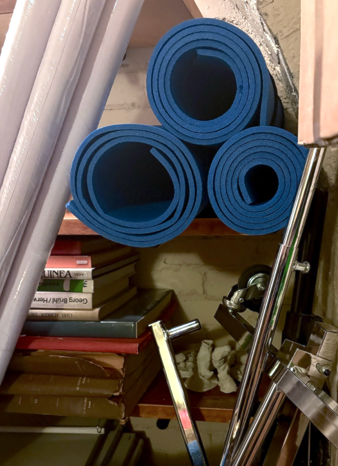

Opastus (Epäolennaisuuksiin)
Opastus (epä)olennaisuuksiin on museo-opastuksen konventioilla leikittelevä rönsyilevä, eksklusiivinen kierros Arkkitehtuuri- ja designmuseon A-rakennuksessa. Emme tutustu näyttelyihin, vaan kierrämme museon yleisöltä kätköön jäävät tilat. Opastus on vegaaninen ja gluteeniton. Tervetuloa mukaan.
